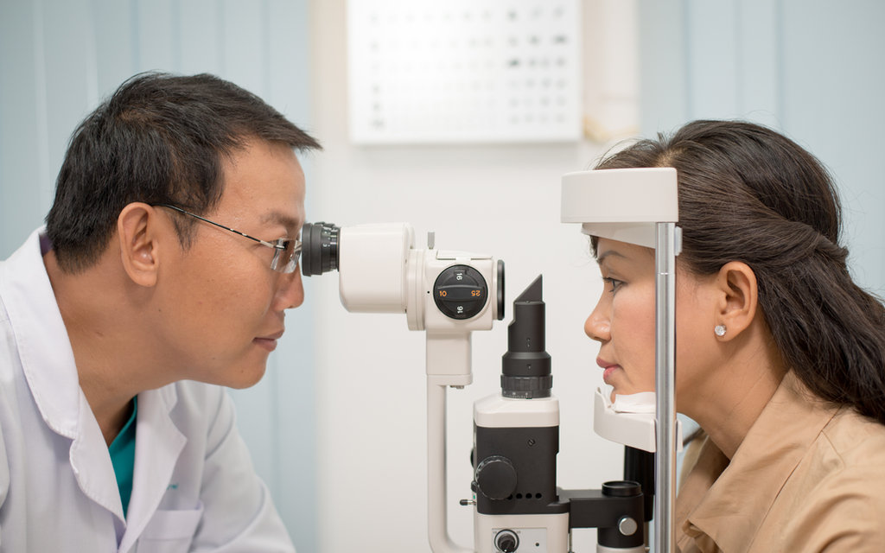

Accelerating Clinical Trials with AI-Powered Biomarker Detection

The Challenge
Clinical trials live or die on the quality and timeliness of their data. Identifying the right biological indicators — and the right patients — has traditionally meant slow, manual review of imaging and lab results. That bottleneck delays recruitment, complicates monitoring, and ultimately pushes back the day a treatment can reach the people who need it.
Our Approach
We built AI imaging models that detect biomarkers with greater speed and consistency than manual review allows. Combining machine learning with computer vision, the system surfaces biological indicators earlier in the pipeline and supports the teams responsible for patient selection, ongoing monitoring, and downstream analysis. The emphasis throughout was on reliable, explainable signals that clinical experts can trust and act on.
The Impact
By automating the detection of key indicators, the workflow streamlines patient selection, monitoring, and analysis, and helps compress trial timelines. The result is a more efficient path from study design to evidence — so promising treatments can move toward market sooner without compromising rigour.
Back to all stories